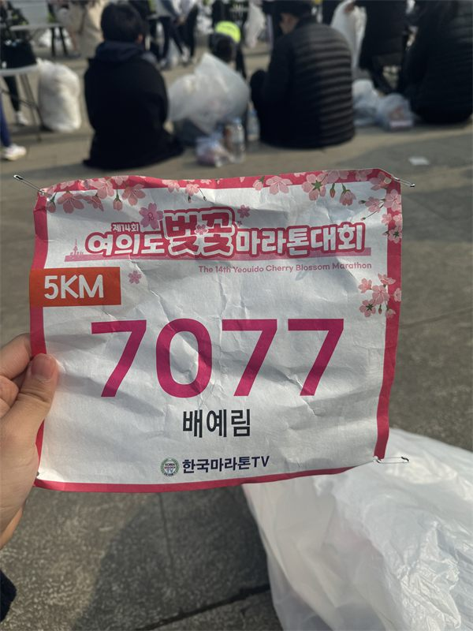
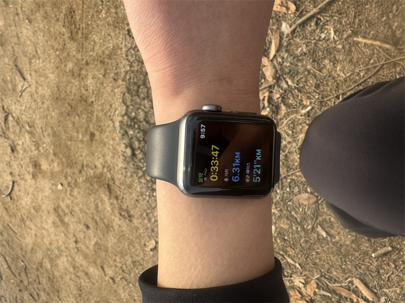
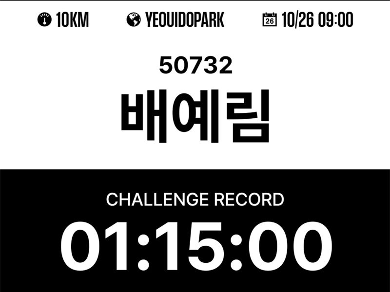
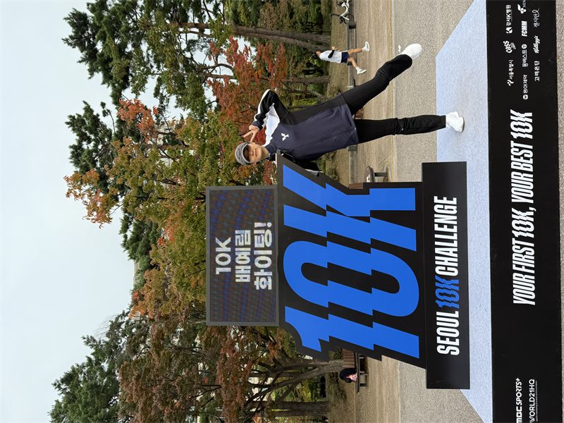
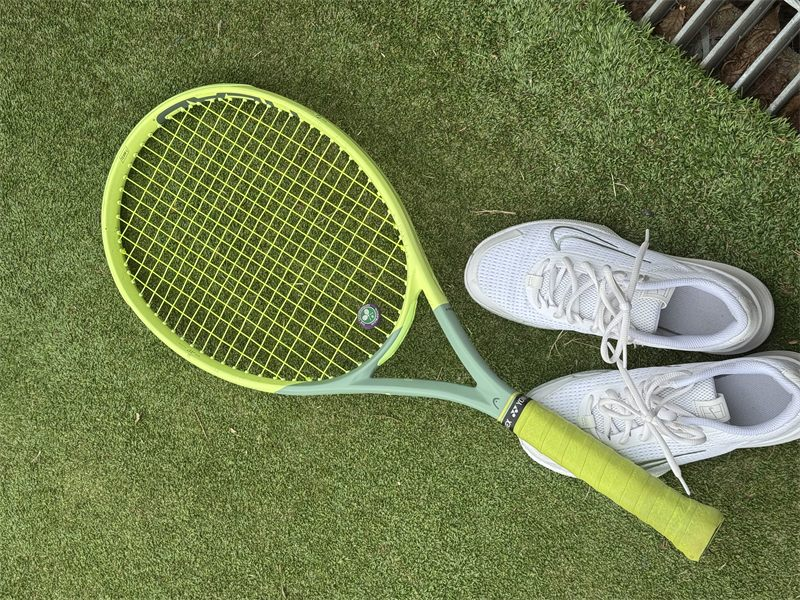
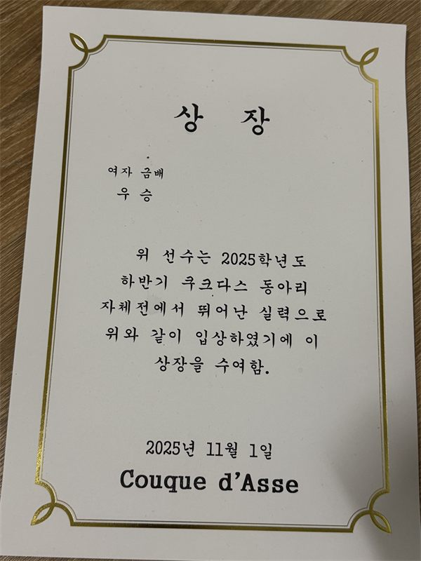

02 Workout
5KM와 10KM 마라톤, 그리고 테니스 대회까지. 목표를 정하고, 과정을 남기고, 다음 목표를 세웁니다.
기록
5KM · 10KM · Tennis 2024.03.03 — 2025.11.01
5KM 마라톤번호 · 2024.03.03
5KM 마라톤기록 0:33:47
10KM 마라톤기록 01:15:00
10KM 마라톤인증샷 · 2025.10.26
테니스라켓 · 대회 준비
테니스우승 · 2025.11.01